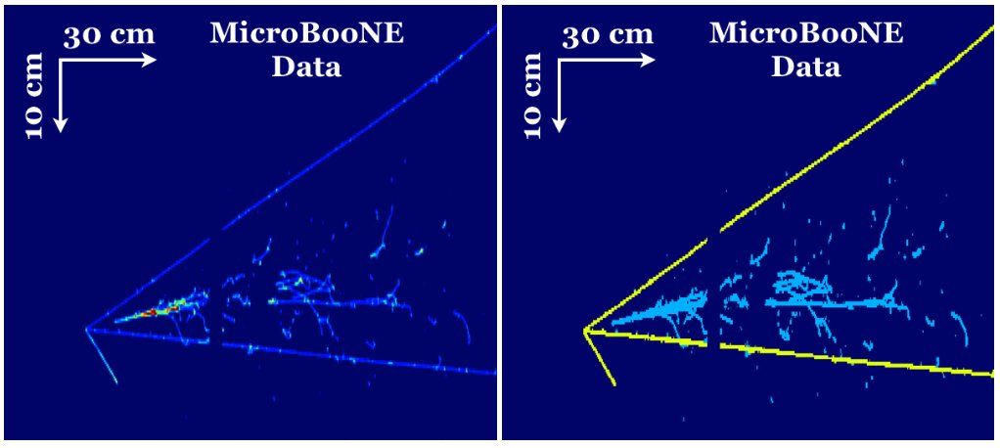
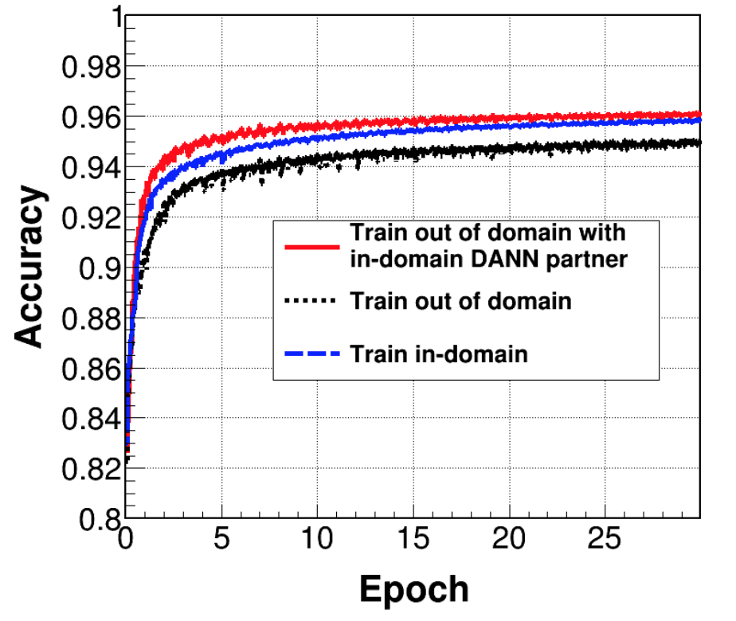

There was no meeting this week, but here's a flush of news to avoid a clog.
Meeting:
Next meeting
Let's plan on September 5th 11:30AM Fermilab/Chicago (US/Central) time.
Please send me what awesome you can present. We all want to see your progress!
Recent Neutrino-ML Papers
EXO-200 ... using deep neural nets for energy and position estimation of the signal
You can find Kazu (me) and Taritree as authors on our slack to ask questions!

Figure 21 from MicroBooNE paper U-ResNet classifies electromagnetic shower at the pixel level.
Minerva ... using deep neural nets to find the interaction vertex + reduction to a model bias using domain advesarial neural nets
You can find Anushree and Gabe as authors on our slack to ask questions!

Figure 20 (a) from Minerva paper domain adversarial neural netowrk achieves a better accuracy.
The same people organized "AI Grant" contacted me to spread this. This grant is a bit wider opportunity: no need to be AI, any ML projects (and beyond) count. "Apply with any project you need help with. After 30 days, the best players will receive $5,000, a round-trip ticket to Silicon Valley, and access to mentorship from some of the world’s most successful individuals." (from their website)